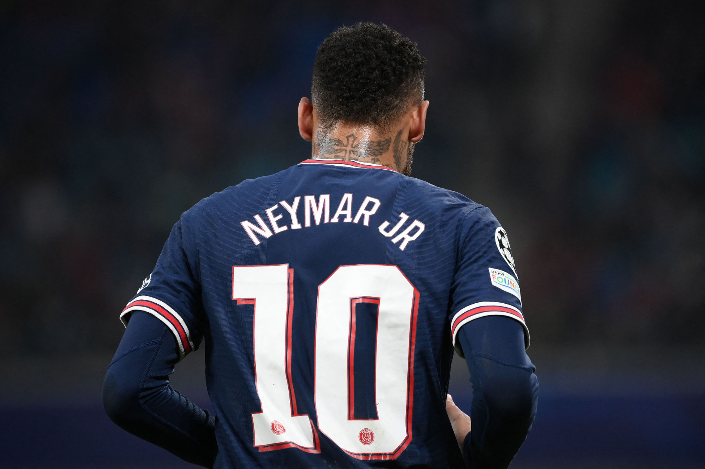
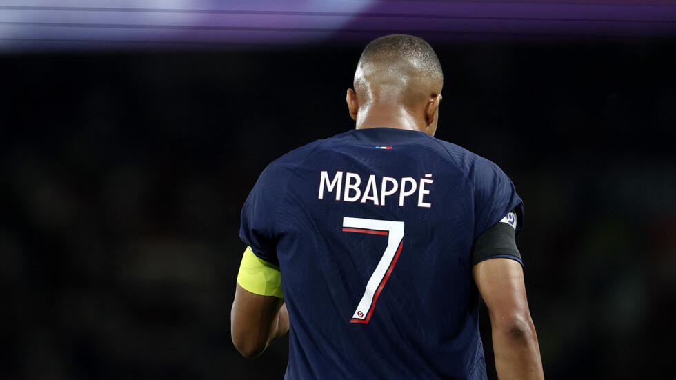

LEO MESSI
Lionel Andrés Messi, also known as Leo Messi, is an Argentine
professional footballer who plays as a forward for and captains both
Major League Soccer club Inter Miami and the Argentina national team.
Wikipedia Born: 24 June 1987 (age 37 years), Rosario, Argentina
Spouse: Antonela Roccuzzo (m. 2017) Current teams: Inter Miami CF (#10
/ Forward), Argentina national football team (#10 / Forward) Dates
joined: 2023 (Inter Miami CF) · See more Height: 1.7 m Parents: Celia
María Cuccittini, Jorge Messi Salary: 1.2 crores USD (2024)

CRISTIANO RONALDO
Cristiano Ronaldo dos Santos Aveiro GOIH ComM is a Portuguese
professional footballer who plays as a forward for and captains both
Saudi Pro League club Al Nassr and the Portugal national team.
Wikipedia Born: 5 February 1985 (age 39 years), Hospital Dr. Nélio
Mendonça, Funchal, Portugal Current teams: Al-Nassr FC (#7 / Forward),
Portugal national football team (#7 / Forward) Dates joined: 2023
(Al-Nassr FC), 2021 (Manchester United F.C.) · See more Children:
Angel dos Santos Aveiro Height: 1.87 m Salary: 20 crores EUR (2024)
Full name: Cristiano Ronaldo dos Santos Aveiro
NEYMAR JR
Neymar da Silva Santos Júnior, also known as Neymar Júnior or simply
Neymar, is a Brazilian professional footballer who plays as a left
winger, attacking midfielder or forward for Saudi Pro League club Al
Hilal and the Brazil national team. Wikipedia Born: 5 February 1992
(age 32 years), Mogi das Cruzes, State of São Paulo, Brazil Current
teams: Al Hilal SFC (#10 / Forward), Brazil national football team
(#10 / Forward), Brazil Dates joined: 2023 (Al Hilal SFC) · See more
Full name: Neymar da Silva Santos Júnior Height: 1.75 m Salary: 10
crores EUR (2025) Parents: Neymar Santos Sr., Nadine Gonçalves

Kylian Mbappé
Kylian Mbappé Lottin is a French professional footballer who plays as
a forward for La Liga club Real Madrid and captains the France
national team. Widely regarded as one of the best players in the
world, he is known for his dribbling, finishing, and speed. Wikipedia
Born: 20 December 1998 (age 25 years), 19th arrondissement, Paris,
France Current teams: Real Madrid CF (#9 / Forward), France national
football team (#10 / Forward) Dates joined: 2024 (Real Madrid CF),
2017 (France national football team, Paris Saint-Germain F.C.), 2015
(AS Monaco) Salary: 3.12 crores EUR (2025) Height: 1.78 m Siblings:
Ethan Mbappé, Jirès Kembo Ekoko Parents: Fayza Lamari, Wilfried Mbappé
